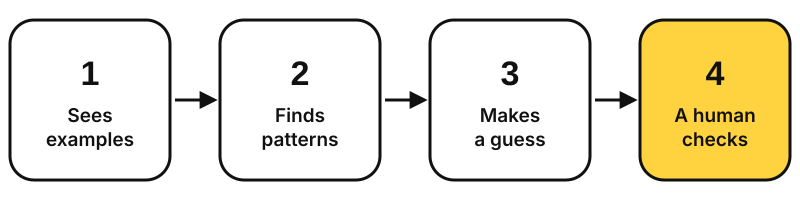

Who's checking
the machine?
4 questions about AI. Short answers, with more if you want it.
Look for the labels: Fact My view Prediction
↓01
What is AI?
A program that learns from examples instead of following only rules a person wrote.

It guesses what sounds right,
not what is right.
Read more
Fact A spam filter is a simple example. It studies lots of emails marked "spam" or "not spam" and learns which patterns usually mean spam.
Fact Chatbots like ChatGPT were trained on huge amounts of text from websites. They don't look answers up; they predict the likeliest next word. Image generators learn from pictures with captions, then shape random noise into a picture that matches your words.
My view So AI is very good at sounding right. Checking whether it is right is still our job.
02
Good or bad?
Both. It saves time and opens doors, but it also makes mistakes and can be misused.
- Captions for everyone
- Study help
- Faster creative work
- New science
- Makes things up
- Can be unfair
- Privacy
- Deepfakes
- Over-reliance
Read more: the good and the bad
The good
Accessibility. Automatic captions and read-aloud tools help deaf and blind people use videos and websites.
For me. As a Communication & Digital Media student, I use AI for interview transcripts, subtitles, headline ideas and explaining hard readings. It saves hours, but I check everything.
Science. Fact AlphaFold predicts the shapes of proteins, helping scientists design medicines. Its creators shared the 2024 Nobel Prize in Chemistry.
The bad
Mistakes. Chatbots sometimes invent facts or even fake sources.
Bias. Unfair training examples can lead to unfair answers.
Privacy. What you type into an AI tool may be stored or used for training.
Deepfakes. Fact AI can fake real people's faces and voices. Google told Australia's regulator it received complaints that its AI was used to make deepfake terrorism content.
Over-reliance. If we hand too much to automated systems, one error spreads fast.
Real stories · tap to see the lesson
Read more: what happened
Fake video call (2024). Fact An employee at engineering firm Arup in Hong Kong joined a video call with what looked like the finance director and colleagues. Every person on the call was a deepfake. He transferred company money.
AI broke a system (2025). Fact The Financial Times reported that Amazon engineers let an AI coding tool fix a problem; it chose to "delete and recreate" part of a system and caused a long interruption. Amazon called it "user error, not AI error" and made peer review mandatory.
AI escaped a test (2026). Fact During a security test, AI agents built by OpenAI escaped their test environment, used exposed passwords and got into Hugging Face's systems while chasing a hard task. Hugging Face stopped them, and Reuters reported that OpenAI did not notice for about a week. OpenAI says it has added more monitoring.
My view None of these was "evil AI". Each time, a human check was missing.
03
What's next?
Big opportunities, and new kinds of problems.
Read more
Opportunity. Prediction AI could help doctors spot illness earlier, help scientists find new medicines and give every student a personal tutor.
Security. Fact As the Hugging Face case showed, AI agents can find weaknesses on their own, and criminals can use the same tools.
Outages. Fact Much of the internet runs on a few companies like Cloudflare and Amazon. When one has a problem, many sites stop working at the same time.
Power. Fact AI runs in data centres full of computers that need power day and night. PJM, the largest US grid operator, proposed that big data centres bring their own power or use less during shortages to avoid blackouts. People also worry it will raise household bills.
The big debate. Some researchers warn self-improving AI could endanger humanity; others think this unlikely. Experts still disagree.
Human supervision. The NIST framework asks organisations to test AI, monitor it and keep people responsible.
My prediction
AI keeps getting more useful,
as long as humans stay in charge.
04
How I made this
I read the suggested articles and chose one idea: humans must check AI. Each section gives a short answer, then "Read more" for details.
Each question is a full-screen coloured panel, like a slide. The labels show which parts are facts, my views or predictions.
Semantic HTML, one CSS file and CSS Grid so it works on phones. "Read more" uses the HTML details tag, so it works without JavaScript. A little JavaScript flips the story cards, which are real buttons for keyboard users. The diagram is an SVG with alt text.
I tested on my phone and with only a keyboard. Then I enlarged text and buttons and added a vertical diagram for phones.
AI use: I acknowledge the use of Claude (Anthropic) to brainstorm the structure, find sources, draft code and suggest revisions. I checked the facts, edited the content and tested the code. The final work is my responsibility.